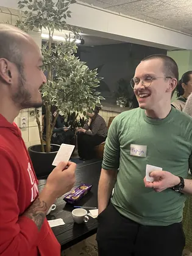
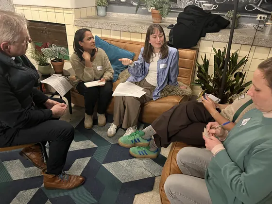

Amortality2126
Family Gatherings
What if ageing were optional?
Then a 150-year-old and a newborn sit at the same family dinner.
And then what?
Timescaping Live is where people get together to imagine society a hundred years from now, from the big questions to the mundane details.
Most of us have an appetite to imagine freely what the future could be. But there is rarely room for it. Change moves fast, our lives are busy, and the future mostly reaches us as predictions and bad news, in conversations where someone always has to be right.
So you can ask “what if”, follow where it leads, and hear how differently others imagine 2126.
During a Timescaping Live session you take a break from the present and surprise yourself with thoughts you never had before, in an atmosphere both playful and serious.
Guided by Cristian Boscheri, artist and performer, you step into 2126 through vivid scenario cards and explorations with other participants.
“Even two weeks later, I still find myself reflecting on the conversations we had. They really stayed with me.”
Eva Beunk, composer and educator
“Really eye-opening to experience everyone’s understanding and opinions on situations.”
Participant




Each card puts you in a world a hundred years from now, presented as ordinary, with one specific change in how things are arranged. Then comes a scene, close enough to film. It ends with a question that can’t be answered with yes or no, and hands the rest of the story to whoever holds the card.
What if ageing were optional?
Then a 150-year-old and a newborn sit at the same family dinner.
And then what?
8 of about 110 cards, written since 2024.
About two hours, from today to 2126 and back, built like a show.
“A structured way to let your thoughts run freely…”
Participant
Meet the others, why a hundred years, and one shared assumption, that humans are still here in 2126.
First thoughts about 2126, from where we are today.
From here on, we speak as people living there.
One reads a card aloud, the other answers from inside it.
Make your own card, on a theme that matters to you.
What shifted, and what it says about today.
People often leave feeling energised and connected, with questions about today they didn’t arrive with.

Your host is Cristian Boscheri, artist and performer based in Rotterdam, with twenty years of taking audiences somewhere unexpected. Like many of us, he felt overwhelmed by how fast technology and society are changing. Timescaping became his way of channelling it, and of sharing that with others.
More about Cristian and TimescapingYou’ll hear from Cristian as soon as the next session is planned.
About two hours, in English, no experience needed.